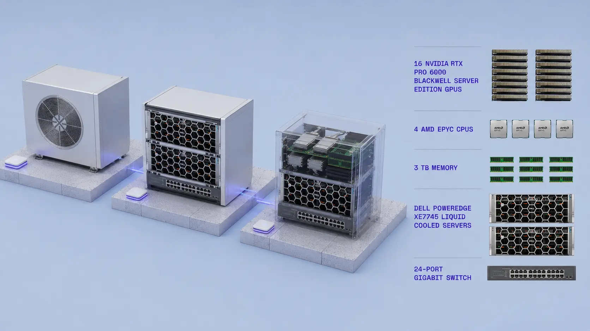
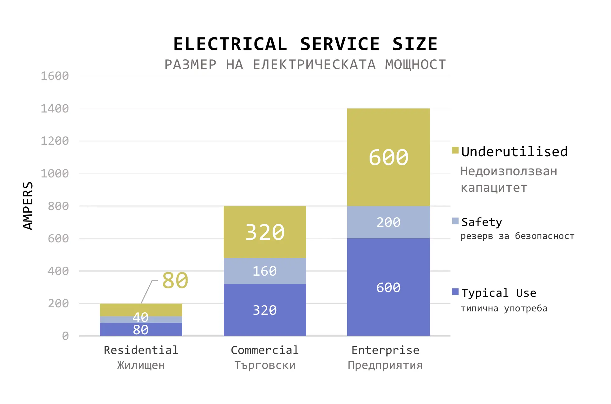
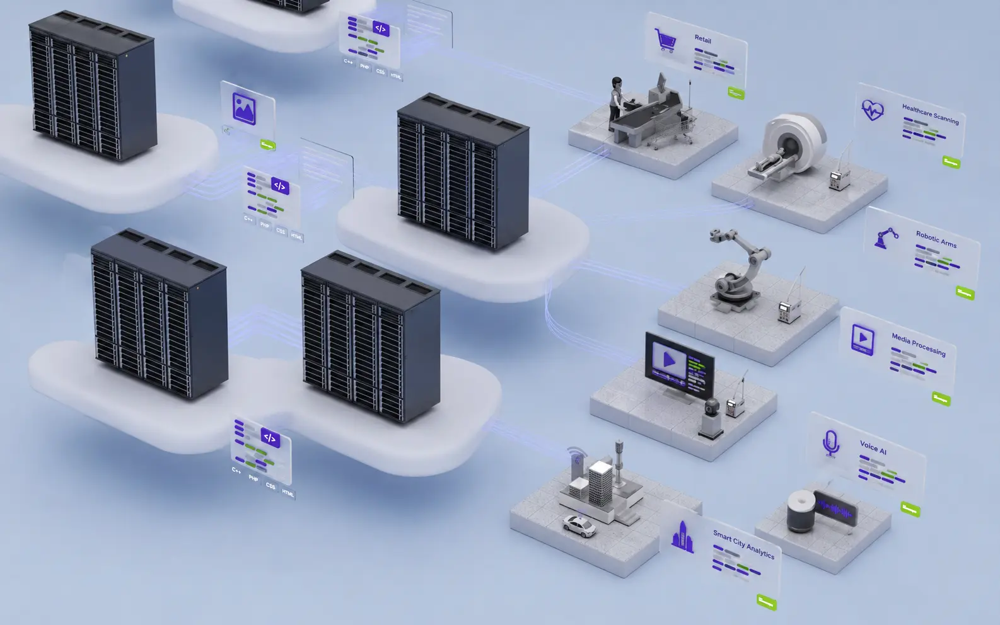
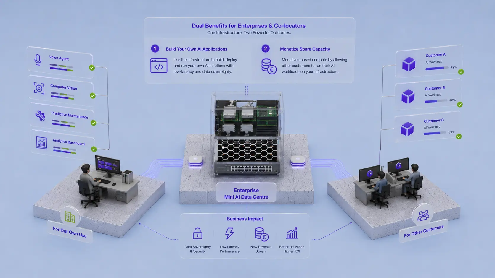

Български Облачни Системи е първият разпределен център за данни, който използва съществуваща инфраструктура и недоизползван енергиен капацитет, за да отговори на нарастващото търсене на изчисления с изкуствен интелект.
Той е проектиран да доставя мегавати нови изчисления за извод по-бързо и по-евтино от конвенционалните центрове за данни.

След десетилетия на слаб растеж, изкуственият интелект трансформира глобалното търсене на енергия с порядък. Търсенето на центрове за данни в САЩ и Европа може да достигне 150 GW до 2028 г., с прогнозиран недостиг от около 100 GW налична мощност. Дори ако изграждането на центрове за данни може да се справи с нарастващото търсене, пречката все още ще бъде инфраструктурата за доставка на енергия.
Отключване на мощност — БОС преобразува недоизползвания капацитет за захранване „зад измервателния уред“ във висококачествени изчисления, като използва съществуващата инфраструктура, вместо да чака нови мащабни взаимовръзки и централизираното им изграждане.

Чрез интеграцията на физическа инфраструктура и модерни изчислителни възможности, ние трансформираме локациите на нашите клиенти в стратегически Edge (периферни) дата центрове. Това отваря пътя за внедряване на високопроизводителни решения с изкуствен интелект в сектори като: финанси и банково дело; здравеопазване и болнична грижа; образование и публична администрация; ритейл, хотелиерство и корпоративни услуги, логистика, производство и строителни дейности.

БОС МИНИ е специално разработен за лесен монтаж на открито или закрито. Всеки възел е проектиран да бъде самостоятелен, тих, модулен, лесен за обслужване и сигурен.
БОС ОБЛАК е система от възли, които работят заедно като флотилия, координирана чрез БОС SOL (Secure Orchestration Layer). Така много независими възли могат да се държат като кохерентен облак, изпълнявайки AI inference работни натоварвания близо до крайните потребители, намалявайки латентността.

Мини центровете за данни с изкуствен интелект предлагат двойно предимство за предприятията и фирмите, които избират да станат колокатори. Първо, те получават директен достъп до локализирана инфраструктура с изкуствен интелект, което им позволява да изграждат и внедряват свои собствени приложения с изкуствен интелект с ниска латентност — от гласови агенти и компютърно зрение до автоматизация и частни работни натоварвания с изкуствен интелект — без да разчитат изцяло на централизирани доставчици на облачни услуги. Второ, те могат да монетизират неизползвания изчислителен капацитет, като позволяват на други клиенти да изпълняват работни натоварвания с изкуствен интелект на същата инфраструктура, като по този начин ефективно трансформират своите съоръжения в генериращи приходи центрове за изкуствен интелект, като същевременно максимизират използването на захранване, охлаждане и мрежови активи.